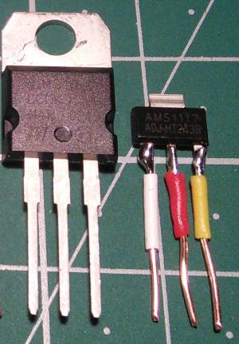
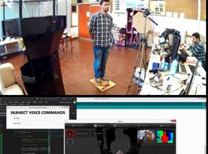

2015-05-26 - Nº 4
Editorial
E já estamos na quarta edição. O modelo e o formato mantêm-se os mesmos. Esta Newsletter encontra-se mais uma vez disponível no sistema documenta do altLab. Todas as Newsletters encontram-se no link.
Esta Newsletter tem os seguintes tópicos:
- Novidades da Semana
- Ciência e Tecnologia
- Cursos MOOC
- Modelos 3D
- Open Source
- Circuitos
- Artigo do Maker
- Gadget em Destaque
- Compras
- Ferramentas
Nesta Newsletter falaremos acerca da ferramenta de edição gráfica chamada GIMP, de um gadget que permite testar componentes e de um sistema para digitalizar em 3D pessoas apresentado por um maker. A Ferramenta da semana é o paquímetro.
 João Alves ([email protected])
João Alves ([email protected])
O conteúdo da Newsletter encontra-se sob a licença  Creative Commons Attribution-NonCommercial-ShareAlike 4.0 International License.
Creative Commons Attribution-NonCommercial-ShareAlike 4.0 International License.
Novidades da Semana ^
Tessel 2, a $35 Open-Source IoT Development Board That Runs Linux
"Tessel 2 is the next-generation Tessel open-source microcontroller that is programmable in JavaScript (Rust and other languages will also be supported), compatible with Node.js and io.js, and it offers incredibly reliable 802.11 b/g/n WiFi, two USB ports, and a 10/100 Ethernet port."
Imagination boosts IoT apps with Java SE 8 support in MIPS architecture
"IMAGINATION TECHNOLOGIES has announced that the latest version of Java SE 8 is now available for its MIPS CPU architecture. Part of an ongoing partnership with Oracle, the move looks to enhance Java for embedded and Internet of Things (IoT) applications, and is touted to play a major role for emerging and future devices."
MSP430FR6989 LaunchPad Development Kit
"The MSP-EXP430FR6989 LaunchPad Development Kit is an easy-to-use Evaluation Module (EVM) for the MSP40FR6989 microcontroller (MCU). It contains everything needed to start developing on the ultra-low-power MSP430FRx FRAM microcontroller platform, including on-board emulation for programming, debugging and energy measurements. The board features on-board buttons and LEDs for quick integration of a simple user interface as well as a Liquid Crystal Display (LCD) display which showcases the integrated driver that can drive up to 320 segments. It also offers direct access to the Extended Scan Interface, which is a dual analog front-end (AFE) created for low-power rotation detection."
Huawei is launching our IoT OS, LiteOS
"LiteOS is the world’s most lightweight IoT OS. It is small in size at 10KB and supports zero configuration, auto-discovery, and auto-networking. It can be widely applied to different areas including smart homes, wearable, connected vehicles and other industries. The LiteOS helps to simplify the development of smart hardware to enhance IoT connectivity. In addition, Huawei announced that LiteOS will be opened to all developers, which enables them to quickly develop their own IoT products."
Ciência e Tecnologia ^
365-Gigapixel Panorama of Mont Blanc Becomes the World’s Largest Photo
"The astonishing majesty of this impressive white giant is too wide to be represented either in words or images. You have to be there to feel it. But now, you can grab that rarefied atmosphere through the highest resolution panorama ever made: a way to know, explore and feel the Mont Blanc. No matter if you’re not an alpinist or a photographer: from now onwards the highest mountain in Europe will be part of your life like never before."
‘Truly’ electronic textile made of graphene for wearable tech
"Researchers have created what they say is the world’s first electronic textile using graphene, which could revolutionize the way wearable tech products are made."
Swiss researchers develop pocket-sized, origami-inspired drone
"Researchers are working on a new drone that is able to automatically unfold itself and quickly go airborne, with the compact and foldable drone ideally suited for emergency first response. The custom quadcopter drone is able to launch in less than one second, and is easily transportable since it's the size of the palm of your hand."
New evidence that electrical stimulation accelerates wound healing

"The most detailed study to date of skin wound healing, conducted by University of Manchester scientists with 40 volunteers, has provided new evidence that electrical stimulation accelerates wound healing. In the new research, half-centimeter harmless wounds were created on each upper arm of the volunteers. One wound was left to heal normally, while the other was treated with electrical pulses* over a period of two weeks. The pulses stimulated angiogenesis — the process by which new blood vessels form — increasing blood flow to the damaged area and resulting in wounds healing significantly faster."
Compressing graphene-laden ink increases its conductivity by more than 50 times
"Researchers at the University of Manchester have come up with yet another use for graphene that’s far more plausible than some of the other potential uses proposed thus far."
Cursos MOOC ^
Programming for Everybody (Python) - Começa a 1 de Junho
"This course aims to teach everyone to learn the basics of programming computers. The course has no pre-requisites and avoids all but the simplest mathematics. Anyone with moderate computer experience should be able to master the materials in this course."
Begin Programming: Build Your First Mobile Game - Começa a 1 de Junho
"Learn the basics of Java programming by developing a simple mobile game that you can run on your computer, Android phone, or tablet."
LFS101x: Introduction to Linux
"Develop a good working knowledge of Linux using both the graphical interface and command line, covering the major Linux distribution families."
6.00.1x: Introduction to Computer Science and Programming Using Python - Começa a 10 de Junho
"This course is an Introduction to computer science as a tool to solve real-world analytical problems."
Begin Robotics - Começa a 15 de Junho
"Explore the history, anatomy and intelligence of robots with this free online course. Test drive robots using exciting simulations."
Programming Mobile Applications for Android Handheld Systems: Part 2 - Começa a 17 de Junho
"This course provides a comprehensive introduction to the design and implementation of Android applications for handheld systems, such as smartphones and tablets."
An Introduction to Interactive Programming in Python (Part 2) - Começa a 11 de Julho
"This two-part course is designed to be a fun introduction to the basics of programming in Python. Our main focus will be on building simple interactive games such as Pong, Blackjack and Asteroids."
Modelos 3D ^
Com a disponibilidade de ferramentas que permitem dar azo a nossa imaginação na criação de peças 3D e espaços como o thingiverse para as publicar, esta rubrica apresenta alguns modelos selecionados que poderão ser úteis.
Case for LCR-T3 component tester (http://www.thingiverse.com/thing:694790)
This is a case for the LCR-T3 variant of the quite wonderful universal transistor and component tester developed by Markus Frejek, and later Karl-Heinz Kübbeler.
The 3D Printed Marble Machine #2 (http://www.thingiverse.com/thing:795952)
After success of my First 3d printed marble machine, I've been able to make "The 3D Printed Marble Machine #2" become reality.
As a first year student at the Fontys School of Fine and Performing Arts, Netherland. I'm producing the marble machines in my spare time, with the intention to develop my own skills in my way of thinking about art swell as technical skills.
Open Source ^
GIMP - The GNU Image Manipulation Program
A designação do programa refere-se ao acrónimo GNU Image Manipulation Program. Como Open Source que é, a sua distribuição é livre o que não significa de forma alguma que tem deficit de qualidade. A versão que foi analisada é a 2.8. Pode ser usado como um simples programa de edição de imagem, como uma ferramenta de retoque profissional de fotografias, como um sistema online de processamento batch, um conversor de imagens entre formatos, etc.
O GIMP é expansível e extensível através de um sistema de plugins e extensões que permitem fazer praticamente qualquer coisa. As tarefas que são necessárias executar na ferramenta podem ser scriptadas.
O GIMP foi escrito e desenvolvido em UNIX mas o código com as devidas adaptações foi portado para correr em Windows e MAC OS X.
Funcionalidades:
- Pintura
- Conjunto completo de ferramentas de pintura e desenho incluindo Brush, Pencil, Airbrush, Clone, etc.
- Sampling sub-pixel para todas as ferramentas de desenho para obter um anti-aliasing de alta qualidade.
- Editor de gradientes e blend tool muito potente
- Suporte para brushes personalizadas e padrão
- Sistema
- Gestão de memória baseada em blocos o que permite que o tamanho da imagem apenas esteja limitado ao espaço livre em disco.
- Abertura de um número virtualmente ilimitado de imagens.
- Manipulação Avançada
- Suporte completo de canal alfa
- Camadas e canais
- Múltiplos níveis de undo/redo
- Camadas de texto editáveis
- Ferramentas de transformação incluindo rotação, escala, corte e flip
- Ferramentas de selecção incluem o rectângulo, rectângulo arredondado, elipse, livre e fuzzy
- Ferramenta de extração do Primeiro Plano
- ferramenta de caminhos avançada com selecções de bezier e poligonais.
- caminhos transformáveis, seleções transformáveis.
- Mascara rápida para pintar uma seleção.
- Extensibilidade
- Um base de dados procedimental para chamar as funções internas do GIMP a partir de programas externos como o Script-fu
- Possibilidade de fazer scripts avançados em diversas linguagens (Scheme, Python, Perl)
- Plug-ins que permitem acrescentar novos formatos de ficheiros e novos filtros de efeitos.
- Mais de 100 plug-ins já disponíveis
- Animação
- Carregar e Gravar animações num formato de frame em camada
- suporte do formato MNG
- Navegador de Frames (GAP - GIMP Animation Package)
- Skin Onion (GAP - GIMP Animation Package)
- Bluebox (GAP - GIMP Animation Package)
- Manuseamento de ficheiros
- Formatos de ficheiros suportados incluem bmp, gif, jpeg, mng, pcx, pdf, png, ps, psd, svg, tiff, tga, xpm, e muitos outros
- Abrir, mostrar, converter e gravar para muito formatos
- importação e exportação de Caminhos SVG
A fotografia apresentada no inicio deste capitulo foi melhorada usando o filtro "Unsharp Mask".
Abaixo encontra-se uma imagem que foi gerada pela opção File|Create|Logos|Neon...
Trata-se de uma ferramenta que se encontra ao nível das demais comerciais, vale a pena experimentar.
Links úteis:
- GNU Image Manipulation Program - Documentation
- SIMPLE FLOATING LOGO
- Extending Gimp with Python
- Digital Timing Diagram everywhere
Circuitos ^
Aqui é apresentado um circuito simples que poderá ser construído com componentes.
Regulador de Tensão Ajustável

Estes circuitos foram feitos recorrendo a dois reguladores de tensão ajustáveis comuns - o LM317T e o AMS1117ADJ.
O LM317T é um regulador linear de voltagem ajustável que é muito popular. Foi inventado em 1970 e ainda hoje é usado. Trata-se de componente muito barato. Devido às suas características, a forma como faz a redução da voltagem de saída é feito à custa de dissipação de calor o que o torna pouco eficiente. Pode ter tensões de saída entre os 1.25 V e os 37V.
O LM317 tem três pinos: VIn, Vout e ADJ. Para que definida a tensão no Vout é usado o circuito abaixo apresentado:
Este apresenta na sua configuração duas resistências R1 e R2. O Vout = Vref*(1+R1/R2). O valor da tensão de referência costuma ser por volta dos 1.25V.
Este suporta uma corrente máxima de 1A. Alguns modelos suportam até 1.5A. Os condensadores são aconselhados e em alguns caso necessários para diminuir/eliminar os efeitos das frequências introduzidas pelos outros elementos do circuito. Servem igualmente para que sejam atenuados os efeitos dos picos de consumo.
O AMS1117 além de ser de um formato diferente (SOT-223) mantém a compatibilidade com o LM317T em termos dos pinos. É um integrado mais evoluído que os anteriores e com uma eficiência superior.
| IC | Formato | Input | Output | Max Amp | DataSheets |
|---|---|---|---|---|---|
| LM317T | TO-220 | 3V a 40V | 1.25V a 37V | 1A | Link |
| AMS1117-5.0 | SOT-223 | 1.5V a 12V | 1.25V a 9.7V | 1A | Link |
Esquemático
Componentes (BOM):
Todos os circuitos levam os seguintes componentes além do regulador de tensão:
- 2 x Condensadores Electrolíticos de 10uF 50V
- 1 x Resistência de 1k Ohm
- 1 x Resistência Variável de 10K Ohm
- 1 x Resistência de 470 Ohm para o LED
- 1 x Led 5mm
- 1 x Bateria 9V
Pin-out dos IC
Apresenta-se abaixo a versão protoboard do circuito apresentado na Newsletter Nº1
Links úteis:
Artigo do Maker ^
Projeto interessante publicado por um maker.
Autonomous / Voice Controlled - 3D Scanning Rig For 3D Printing
A ideia apresentada pelo Aldric Negrier é permitir que a captura 3D funcione da forma mais suave possível com o mínimo de esforço tanto para a pessoa que está a ser digitalizada como para o operador. Este artigo foi originalmente publicado neste link pelo seu autor.
Os objectivos do projecto são:
- Criação de uma mesa rotativa portátil e compacta (com as dimensões necessárias para uma pessoa)
- Montar um processo autónomo de digitalização
- Montar um sistema de digitalização 3D controlado por voz
Materiais necessários:
- 1 placa de contraplacado (120x60x1.2 cm)
- 100ml de cola de madeira
- Verniz de madeira
- Sistema de rolamentos do tipo "Lazy Susan" de 12"
- 48 x parafusos de madeira de 20mm
- motor de 12V DC 15rpm
- 1 driver H-Bridge
- Arduino Nano
- Módulo Bluetooth module
Ferramentas e máquinas:
- Impressora 3D
- Maquina CNC
- Serra de mesa
- Aparafusadora
Preparação da Madeira:
- Cortar o contraplacado em 2 placas
- Colar as duas placas cortadas das placas cortadas
- Aplicar verniz na base
Posicionar o sistema de rolamentos de 12" na madeira
Desenhar as engrenagens
Cortar as placas com a CNC - engrenagem grandes
Fazer a engrenagem pequena na impressora 3d
Fazer as restantes partes para suportar o motor
Configuração da electrónica
Sistema de Digitalização Autónomo
Para que o sistema possa funcionar de forma autónoma foi acrescentado um sensor Ultrasónico. O objectivo é que o sistema comece a funcionar quando detecta um objecto em cima da plataforma.
Programando o micro-controlador
O código do micro-controlador ficará responsável receber comandos que lhe são enviados via porta série através do bluetooth para o controlo do motor.
Neste instructable foi usado o software skanect para a digitalização e o Speech toolkit da microsoft para o controlo a partir de comandos de voz.
Resultado final

Trata-se de um projecto muito interessante para a digitalização de pessoas em 3D.
Outros artigos/projetos interessantes de ler:
- Introducing petduino
- Intro to Robotics
- PCB designing and isolation milling using only free Software
- Introductory Gear Equations
- Bike Generator Charging Station
- spin
- Build a 30$ laser Scanner
- SinapTec AT328.02 - 3D FDM printer controller board of very low cost
Gadget em Destaque ^
Vamos analisar um gadget.
LCR - T3 - TransistorTester with AVR microcontroller
Hoje o Gadget analisado é um dispositivo que permite reconhecer electronicamente as caracteristicas de alguns tipos de componentes electrónicos.
Qualquer hobbyist sabe que identificar componentes que são recuperados de junk pode ser difícil. A Internet ajuda na localização das especificações dos componentes, no entanto por vezes é complicado encontrá-los. Por exemplo, um transístor 2N5551 tem outra configuração como BC547 tendo contudo ambos um formato TO92. Se o texto no transístor deixou de ser visível, é com métodos para identificar o componente que são muito arcaicos que precisamos de verificar se é um NPN, PNP, N ou P-channel MOSFET etc. Possivelmente o componente tem um diodo de proteção interna e isto dificulta ainda mais a sua identificação. A tarefa por tentativa e erro é de facto muito consumidora de tempo. Foi nesse sentido que foi criado o "automatic Transitor Tester".
Foi originalmente desenvolvido por Markus Frejek e posteriormente continuado por Karl-Heinz Kübbeler.
A utilização deste testador é simples. Coloca-se o componente entre dois ou três posições identificadas por diferentes números e carrega-se no botão. Aguarda-se que ele faça os testes e verifica-se o resultado. Dependente do tipo de componentes este pode levar mais tempo. Isto acontece sobretudo com condensadores.
O TransistorTester tem as seguintes funcionalidades:
- Deteção automática de transístores NPN e PNP, N- e P-channel MOSFETs, diodos (também de diodos duplos), tiristores, triacs, resistências e condensadores.
- Calculo automático e apresentação dos pinos do componente testado
- Deteção e apresentação dos diodos de proteção com transístores e MOSFETs
- Determinação do factor de amplificação e do ""base-emitter forward voltage" nos transístores
- Medição do intervalo da tensão da porta e da capacitância da porta dos MOSFETs
- Apresentar os valores num Écran
- Duração do teste dos componentes: menos de 2 segundos (com exceção de condensadores grandes)
- Operação de um botão; Desligar automático.
- Consumo de potência em modo off: <20 nA
O software base encontra-se disponível em Open Source num repositório SVN, o que não significa que a versão que adquiriram tenha a versão do software disponível. Isto é particularmente relevante nos clones chineses. No entanto isto apenas é problemático se for pretendido fazer atualizações de software. Pode ser consultado no forum para mais informação.
Este projecto baseado no chip da família ATmega permite detectar um conjunto diverso de componentes como transístores NPN, PNP, N e P-channel MOSFET, JFET, díodos, TRIAC, resistências, condensadores, etc. Nas imagem acima apresenta-se a configuração base do circuito. Os componentes a vermelho não são necessários mas podem melhorar a precisão. Os componentes a verde foram alterados desde o primeiro draft do Markus F.
Links Úteis:
Compras ^
Artigos do ebay ou de outras lojas online que poderão ser úteis em projetos.
12864 ESR Meter led LCR Transistor Tester Diode Triode Capacitance MOS PNP/NPN
(http://www.ebay.co.uk/itm/271718046542) - £ 9.87
LCR-T3 graphical multi-function tester resistor capacitor + + + SCR + diode + transistor + mos tube inductance LCD 12864 LCD display, with backlight, backlight color is generally yellow-green. 9v battery powering stacked. If prolonged power , you can use two 8.4v lithium battery pack consisting of.
6" 150mm Digital LCD Electronic Vernier Caliper Gauge Micrometer Measuring Tool
(http://www.ebay.co.uk/itm/400833541634) - £ 2.46
Description:
- Made of strong Plastic carbon fiber composites, lightweight and durable
- Two way measurement, internal and external
- Linear capacitive measuring system
- Zero setting in any position
- With easy to read large LCD display
- Minimum scale to read is 0.1mm / 0.01 inch
- An ideal tool for a broad range of industrial and automotive applications
Specification:
- Measuring Range: 0-150 mm / 0-6 inch
- Resolution: 0.1 mm / 0.01 inch
- Repeatability: 0.1 mm / 0.01 inch
- Maximum Measuring Speed: 1.5 m / sec or 60 inch / sec
- Display: LCD screen
- Power: One Battery (not included), LR44/SR44/AG13 1.5V
- Total size: 2357715 mm / 9.25"3.03"0.59" (approx.)
- LCD display size: 4015 mm / 1.57"0.59" (approx.)
- Main Color: Black
10PCS L317 LM317 LM317T TO-220 Voltage Regulator 1.2V To 37V 1.5A NEW
(http://www.ebay.co.uk/itm/171437919990) - £ 1.01
20PCS AMS1117-ADJ LM1117-ADJ AMS1117 LM1117 IC 1A Voltage Regulator SOT-223
(http://www.ebay.co.uk/itm/400839946412) - £ 1.00
Package Included:
- 20 x AMS1117-ADJ LM1117-ADJ AMS1117 LM1117 IC 1A Voltage Regulator SOT-223
Ferramentas ^
As Ferramentas que usamos no dia-a-dia explicadas ao detalhe.
Paquímetro
Permite medir com precisão a distância entre dois lados de um objecto. É uma ferramenta que contém um régua com graduação com um cursor móvel que permite medir com precisão pequenos objectos.
Actualmente esta ferramenta é muito usada para o desenho de peças 3D como caixas ou outros tipo de peças que precisem de encaixar em objectos já existentes. Os paquímetros digitais vieram substituir os analógicos porque facilitam a obtenção de valores.
O paquímetro tem diversas partes importantes:
- Orelha fixa
- Orelha móvel
- Nônio ou vernier *(polegada)
- Parafuso e travão
- Cursor
- Escala fixa
- Bico fixo
- Encosto fixo
- Encosto móvel
- Bico móvel
- Nônio ou vernier (milímetro)
- Impulsor
- Escala fixa de milímetros
- Haste de profundidade
Para que possa ser feita a leitura do valor do paquímetro é necessário primeiro fazer a leitura na escala fixa de milímetros (13) e depois é preciso fazer a leitura no Nônio. A leitura deste último é feita através do melhor alinhamento do traço com uma das marcações da escala fixa (13). No exemplo abaixo o valor da leitura deverá ser 1,52 mm uma vez que a leitura na escala fixa fica entre 1 e 2 mm e como cada traço no Nônio é de 0,02 mm a medida observada corresponde a 0,52 mm.
Existem diversos tipos de paquímetros, sendo os mais comuns o paquímetro universal e o paquímetro digital. Existem alguns que são específicos para algumas aplicações como o paquímetro de profundidade, o paquímetro com bico basculante e o paquímetro de profundidade.
Dica:
Existe um hack que funciona com alguns paquímetro digitais que permite a ligação deste paquímetro a um Arduino para extrair os valores lidos. O hack apresentado no site Nut & Bolt explica como fazê-lo.
Para mais informações:
That's all Folks!